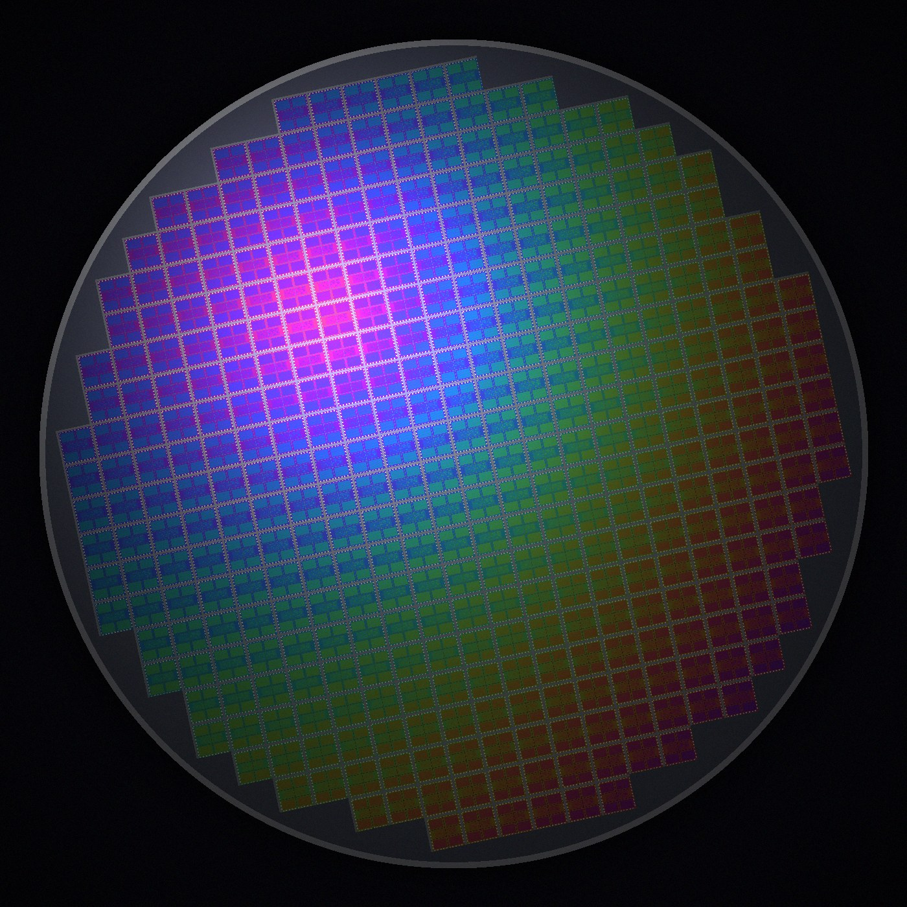
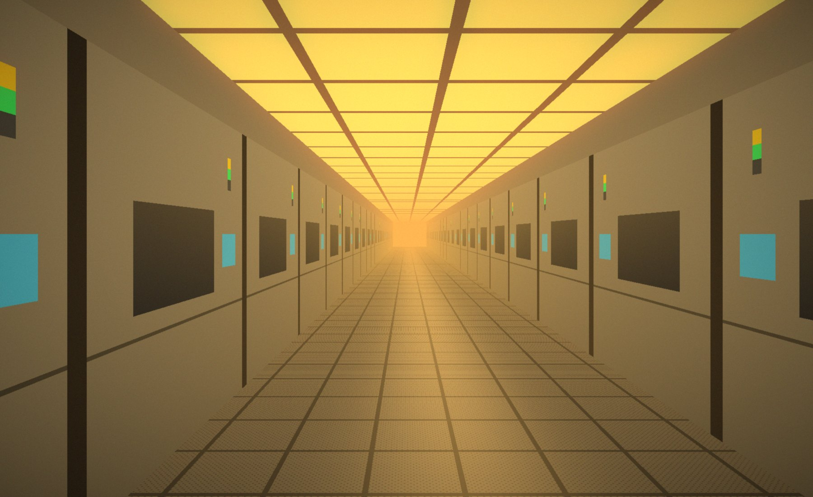
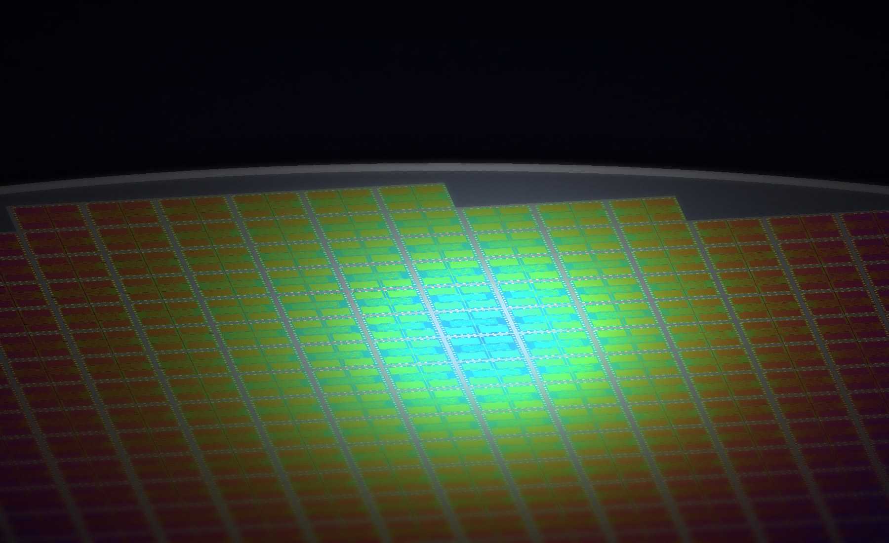
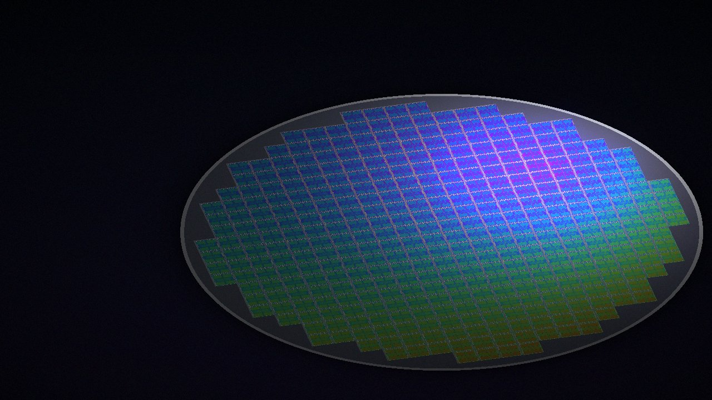

円盤「ウェハー」に回路を刻む
シリコンでできた薄い円盤に、光や薬品を使って細かな電子回路を何層も重ねていきます。虹色に見えるのは、回路のパターンが光を反射しているためです。
半導体工場スタッフ 募集中 ／ 未経験・経験者 歓迎
「AIに仕事を奪われるかもしれない」——そんな声が聞こえるこれからの時代。でも、そのAIは半導体がなければ動きません。映像に映る円盤「ウェハー」から生まれる小さな半導体は、いまも人の手と目に支えられてつくられています。AIが進むほど必要とされる、それが半導体づくりの仕事です。
WHAT IS SEMICONDUCTOR
「AIがどんどん進んだら、自分の仕事はどうなるんだろう」。ふと、そんなことを考えたことはありませんか。
でも、考えてみてください。AIは、半導体がなければ動くことすらできません。AIが賢くなるほど、それを動かす半導体はたくさん必要になり、半導体をつくる人の仕事も求められます。AIの時代を、つくる側で支える——それが半導体の仕事です。
半導体は、電子機器の「頭脳」となる部品。どうやってつくられるのか、3ステップで見てみましょう。

STEP 1シリコンでできた薄い円盤に、光や薬品を使って細かな電子回路を何層も重ねていきます。虹色に見えるのは、回路のパターンが光を反射しているためです。
1枚のウェハーから、たくさんの小さな四角いチップが取れます。検査に合格したものだけが、保護用のパッケージに収められます。
完成したチップは、AIを動かすサーバーをはじめ、スマートフォンや自動車、家電などに組み込まれ、私たちの暮らしを支えています。AIの進化は、このチップから始まります。

WORKPLACE
空調で管理された屋内
温度や湿度が一定に保たれた、屋内中心の職場です。
専用の作業着で入室
ホコリを持ち込まないよう、全身を覆う作業着を着用します。
黄色い照明のエリアも
光に反応する材料を扱う工程では、黄色い照明が使われます。
※画像はイメージです
JOBS
代表的な4つの職種です。どれも、AIの時代に欠かせない半導体を生み出す大切な仕事。実際の担当業務は求人ごとに異なるため、ご希望をうかがってからご案内します。

01 / OPERATOR
ウェハーを収めた容器を装置にセットし、モニターで稼働状況を確認します。
未経験OKの求人あり
02 / INSPECTION
顕微鏡や検査装置を使い、製品の外観や寸法に問題がないかを確認します。
未経験OKの求人あり経験者歓迎
03 / MAINTENANCE
技術者のもとで、装置の点検・部品交換・清掃などをサポートします。
経験者歓迎
04 / LOGISTICS
製品や部材を工程間で運び、数量や在庫をシステムで管理します。
未経験OKの求人あり
※画像はイメージです。未経験・経験者の可否は求人ごとに異なります。
FOR EXPERIENCED
製造・保全・電気・設計・品質管理——ほかの業界で積んだ経験やお持ちの資格も、半導体工場で活かせる場面があります。まずは、これまでのお仕事に近いものを選んでみてください。
これまでのご経験に近いものは？
SUPPORT
01
経験の棚卸し
これまでの業務内容や扱ってきた装置・資格をうかがい、半導体の現場で活かせるポイントを一緒に整理します。
02
経験に合った求人をご提案
未経験向けの求人だけでなく、ご経験・資格を評価する求人を中心にご案内します。
03
条件のご希望もご相談を
給与・勤務形態・勤務地などのご希望は、担当者にお伝えください。管理職・リーダー職をご希望の方も、求人選びの段階からご相談に応じます。
04
在職中でも進めやすく
今の仕事を続けながらのご相談も歓迎です。連絡の時間帯などもお気軽にお伝えください。
「自分の経験で、どんな求人がある？」
まずはそこから聞いてみてください。
ご経験の詳しい内容は、ご応募後に担当者がお電話でうかがいます。
AIを支える半導体を、
人の手と目が支えている。
AIがどれだけ進化しても、それを動かす半導体がなければ何も始まりません。そして最新鋭の装置が並ぶ工場でも、決められた手順を一つずつ確かめる人の仕事は欠かせません。AIの時代だからこそ、必要とされ続ける。そんな働き方があります。
世界中のAIを動かす半導体を、自分の手でつくっている。
胸を張って誇れる仕事です。
WHY NOW
世界中の国や企業が、AIの開発に大きな投資を進めています。AIが広がるほど、それを動かす半導体の需要も高まり、半導体をつくる現場では人材が求められています。業界が伸びているいまこそ、キャリアを変えるチャンスです。
01 / AI
AI開発が加速
生成AIをはじめ、AIの開発・活用が世界中で急速に広がっています。
02 / CHIP
半導体の需要が拡大
AIを動かすサーバーには大量の半導体が必要。つくる力の強化が各国で進んでいます。
03 / PEOPLE
つくる人が求められる
製造・検査・保全・設計など、半導体の現場を支える人材が必要とされています。
CAREER CHANGE
半導体の求人は、未経験から始められるものだけではありません。機械・電気の知識やCAD、設備保全などの経験・資格を求める専門性の高い求人もあり、お持ちの経験や資格によっては、今より高い収入を目指せる可能性があります。
STAGE 1
未経験から始める
資格・経験がなくても応募できます。オペレーターや検査など、未経験から始められる求人をご案内します。
STAGE 2
経験を活かす
製造・品質管理・設備保全などの経験は、半導体の現場でも活かせます。経験を評価する求人もあります。
STAGE 3
専門スキルで上を目指す
CAD設計、装置エンジニア、生産技術など、専門性の高いポジションの求人もご紹介できます。
活かせる資格・経験の例
お持ちの資格は、ご応募後に担当者がお電話でうかがいます。資格がなくても応募できます。
※給与・条件は求人や経験・資格により異なり、収入アップを保証するものではありません。
CONDITIONS
条件は求人ごとに異なります。経験・資格によって条件が変わる求人もあります。詳細は面談時にご案内します。
※記載の年収・条件は当社で取り扱う求人の一例です。実際の条件は求人ごとに異なります。
FLOW
01
Web応募
下のフォームから1分ほどで応募できます。経験者の方は経験内容もお選びください。
02
担当者から連絡
お電話などで、ご希望をうかがいます。
03
面談・選考
求人のご紹介と面談を行います。
04
入社・勤務開始
入社後のご相談も担当者がお受けします。
FAQ
大丈夫です。完全未経験OKの求人もあります。担当者がご経験やご希望をうかがい、ぴったりの求人をご案内します。
専用の作業着を着るため、慣れるまで少し時間がかかる方もいます。面談で現場の様子を詳しくご説明します。
寮ありの求人も、寮なしの求人もあります。ご希望の勤務地や暮らし方に合わせてご案内しますので、お気軽にご相談ください。
応募・ご相談は無料です。
はい、応募できます。お持ちの資格や経験がある方には、それを活かせる求人もあわせてご案内します。
はい。ほかの業界での製造・設備保全・電気・設計・品質管理などのご経験も、フォームの「製造・技術系の経験あり」を選んでご応募ください。ご経験を踏まえて求人をご案内します。
経験や資格を評価する求人もありますが、条件は求人ごとに異なります。ご希望の条件は担当者にお伝えください。
在職中の方のご相談も歓迎です。まずはお気軽にご応募・お問い合わせください。

ENTRY
「AIを動かす半導体、自分がつくってるんだ」と
家族や友人に胸を張れる仕事を、ここから始めませんか。
ご応募後、担当者よりご連絡します。まずは話を聞いてみたい、在職中で転職を考えている、という方も歓迎です。